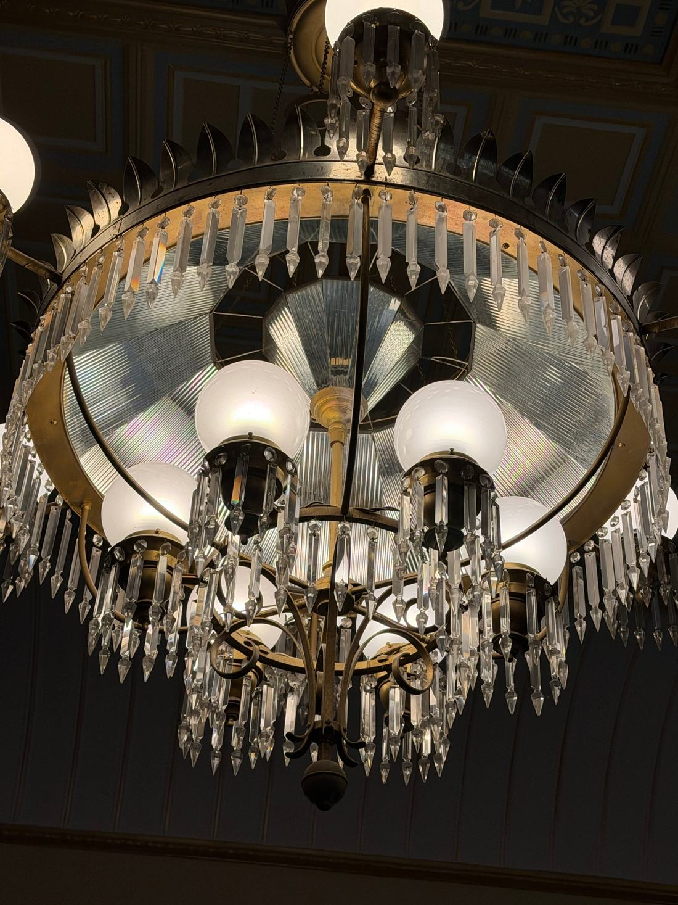

Lighting · one photograph so far
Reflector chandelier
Maker not yet known
- What it is
- A reflector chandelier, a type made for churches and halls in the late 1800s. A reflector is a mirrored surface above the lights that throws their glow down onto the room.
- What the photo shows
- The underside of the large ring is lined with wedge-shaped panels of ribbed, silvered glass, with a faceted cone of the same glass at the centre.
- A crown of metal leaves stands around the top of the ring.
- Cut-glass prisms hang from the ring's edge and from each light.
- At least six frosted globes sit on short arms below the reflector, above scrolled metalwork.
- How many
- More than one. The count is to confirm.
- Date
- Not yet known. The form fits the interior renovation of 1887 to 1894 that also brought the windows [3], but no record found so far says so.
- Maker
- Not yet known. Two makers of this kind of fixture have turned up in research, described below. The resemblance is to the type only. Both are leads to check, not attributions.
- Where the idea came from
- In April 1860 Isaac P. Frink of Newark, New Jersey, patented a reflector for gas lights: a body of bright sheet metal lined with corrugated glass to strengthen the light. His patent describes it for lighting shop windows, not churches [10]. The I. P. Frink name later became closely tied to mirrored reflector fixtures, which dealers date to the 1870s to 1890s [9].
- A second maker
- Thomas F. Bailey founded a reflector company in the early 1880s. It advertised its "compound, silver-plated corrugated glass reflectors" for churches, opera houses and halls, and made chandeliers for oil, gas and kerosene and, by the 1890s, for electricity. In 1920 it became the Bailey Reflector and Sign Co. [11].
- Closest comparison found
- A chandelier of about 1880 in the Heinz History Center, Pittsburgh, linked to Bailey's company. The museum describes a large twelve-sided ring with a pressed-tin cornice of acanthus leaves and twelve panes of mirrored glass beneath, over fourteen kerosene burners. It hung in a Masonic hall, is believed to have moved to a church, and was electrified at some point [11]. Holmdel's chandelier shares the mirrored ring and the crown of leaves. It differs in its hanging prisms and frosted globes. Counting the mirror panels in Holmdel's ring would make the comparison firmer.
- Original fuel
- Not yet known. Fixtures of this type were made for oil, kerosene or gas, and many were wired for electricity later [11]. The cups under Holmdel's globes are consistent with a conversion. A close look is needed to confirm.
- In the records
- An online search in November 2026 found nothing about these chandeliers themselves: no maker, no date, and no account of when the church was first lit by electricity. The church's National Register nomination does not mention the lighting or say when the building was electrified. It does describe the pressed-tin ceiling the chandeliers hang from [3].
- Why it matters
- Windows, tin ceiling and lighting that survive together from one 1890s renovation make a stronger case to funders than the windows alone.